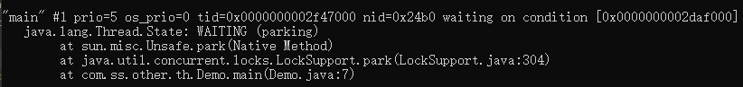
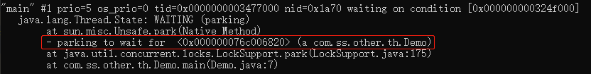

Java并发编程之LockSupport
本文最后更新于：2022年7月29日 上午
简介
LockSupport是一个工具类，提供了基本的线程阻塞和唤醒功能，它是创建锁和其他同步组件的基础工具，内部是使用sun.misc.Unsafe类实现的。
LockSupport和使用它的线程都会关联一个许可，park方法表示消耗一个许可，调用park方法时，如果许可可用则park方法返回，如果没有许可则一直阻塞直到许可可用。unpark方法表示增加一个许可，多次调用并不会积累许可，因为许可数最大值为1。
方法介绍
park()： 阻塞当前线程，直到unpark方法被调用或当前线程被中断，park方法才会返回。
park(Object blocker)： 同park()方法，多了一个阻塞对象blocker参数。
parkNanos(long nanos)： 同park方法，nanos表示最长阻塞超时时间，超时后park方法将自动返回。
parkNanos(Object blocker, long nanos)： 同parkNanos(long nanos)方法，多了一个阻塞对象blocker参数。
parkUntil(long deadline)： 同park()方法，deadline参数表示最长阻塞到某一个时间点，当到达这个时间点，park方法将自动返回。（该时间为从1970年到现在某一个时间点的毫秒数）
parkUntil(Object blocker, long deadline)： 同parkUntil(long deadline)方法，多了一个阻塞对象blocker参数。
unpark(Thread thread)： 唤醒处于阻塞状态的线程thread。
阻塞和唤醒实例
子线程执行LockSupport.park()，由于没有许可，进入阻塞状态。主线程3秒后调用unpark方法给子线程增加了一个许可，park方法返回，子线程被唤醒继续执行。
1 | |
先unpark增加许可，后park消费许可也是可以的。unpark会给thread增加一个许可，此时调用park方法，由于许可是可用的，所以park方法直接返回了。
1 | |
连续调用unpark不会累计许可，许可最大值为1，第一次park就已经消耗了许可，所以第二次park一直阻塞。
1 | |
阻塞对象blocker的作用
通过前面方法介绍可以看到，park、parkNanos、parkUntil方法都有对应的带阻塞对象blocker参数的重载方法。Thread类有一个变量为parkBlocker，对应的就是LockSupport的park等方法设置进去的阻塞对象。
该参数主要用于问题排查和系统监控，在线程dump中会显示该参数的信息，有利于问题定位。
分别调用park()和park(Object blocker)，然后使用jstack查看线程堆栈信息，对比发现后者会多输出一条阻塞对象的信息：
park():
1 | |

park(Object blocker):
1 | |

和显式锁、隐式锁等待唤醒的区别
- park和unpark方法的调用不需要获取锁。
- 先调用unpark方法后调用park方法依然可以唤醒。
- park方法响应中断，线程被中断后park方法直接返回，但是不会InterruptedException异常。
- unpark方法是直接唤醒指定的线程。